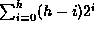
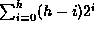
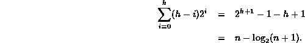

Data Structures and Algorithms
with Object-Oriented Design Patterns in C++
Data Structures and Algorithms
with Object-Oriented Design Patterns in C++
The BuildHeap routine does exactly  PercolateDown operations.
As discussed above, the running time for PercolateDown is
PercolateDown operations.
As discussed above, the running time for PercolateDown is  ,
where is the height in the tree of the node at array position i.
The highest node in the tree is the root
and its height is
,
where is the height in the tree of the node at array position i.
The highest node in the tree is the root
and its height is  .
If we make the simplifying assumption that the running time for
PercolateDown is
.
If we make the simplifying assumption that the running time for
PercolateDown is  for every value of i,
we get that the total running time for BuildHeap is
for every value of i,
we get that the total running time for BuildHeap is  .
.
However,  is not a tight bound.
The maximum number of iterations of the PercolateDown
loop done during the entire process of building the heap
is equal to the sum of the heights of all of the nodes in the tree!
The following theorem shows that this is O(n).
is not a tight bound.
The maximum number of iterations of the PercolateDown
loop done during the entire process of building the heap
is equal to the sum of the heights of all of the nodes in the tree!
The following theorem shows that this is O(n).
Theorem Consider a perfect binary tree T of height h havingnodes. The sum of the heights of the nodes in T is
.
extbfProof
A perfect binary tree has 1 node at height h,
2 nodes at height h-1, 4 nodes at height h-2 and so on.
In general, there are  nodes at height h-i.
Therefore, the sum of the heights of the nodes is .
nodes at height h-i.
Therefore, the sum of the heights of the nodes is .
The summation can be solved as follows: First, we make the simple variable substitution i=j-1:
Note that the summation which appears on the right hand side
is identical to that on the left.
Rearranging Equation  and simplifying gives:
and simplifying gives:

It follows directly from Theorem
that the sum of the heights of a perfect binary tree is O(n).
But a heap is not a perfect tree--it is a complete tree.
Nevertheless, it is easy to show that the same bound applies to
a complete tree.
The proof is left as an exercise for the reader (Exercise ).
Therefore, the running time for the BuildHeap routine is O(n),
were n is the length of the array to be heapified.
 Copyright © 1997 by Bruno R. Preiss, P.Eng. All rights reserved.
Copyright © 1997 by Bruno R. Preiss, P.Eng. All rights reserved.